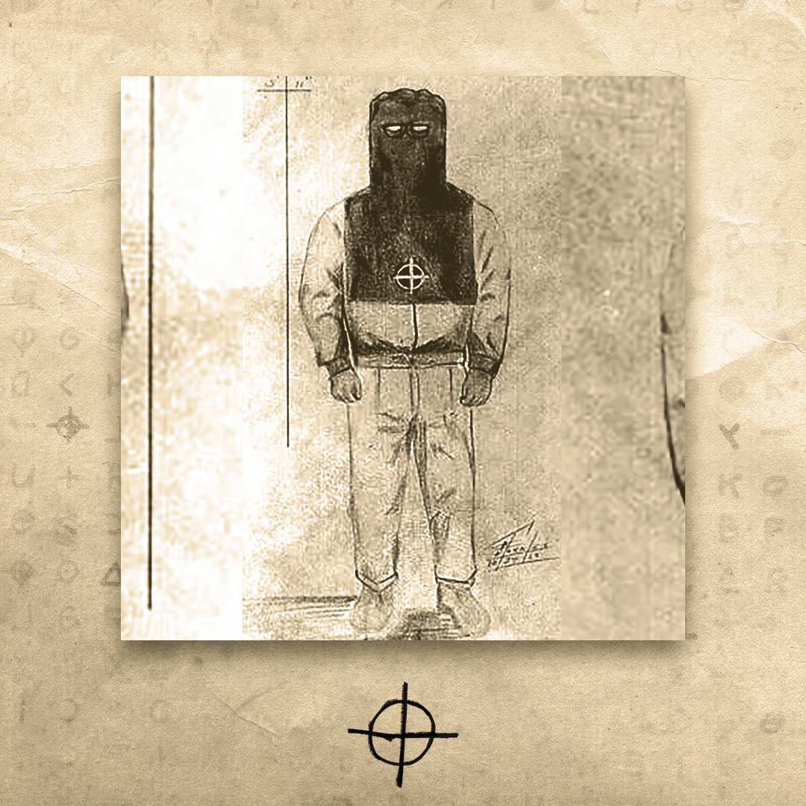

The Zodiac Killer


Operating in Northern California during the late 1960s and early 1970s, the Zodiac Killer remains one of the most infamous unidentified serial killers in American history. He transformed his crimes into a terrifying public game, taunting authorities and the media with complex cryptograms.
The Crimes & Confirmed Victims
The Zodiac has been officially linked to five brutal murders and two attempted murders (survivors who provided vital descriptions). However, in his twisted letters to the press, he boasted of taking the lives of as many as 37 victims. His primary targets were young couples in isolated areas.
"This is the Zodiac Speaking"
The killer actively sought global notoriety. He sent dozens of letters to Bay Area newspapers, opening each with his chilling catchphrase and signing them with a signature crosshairs symbol. He threatened to kill more innocents if the editors refused to print his letters on the front page.
The Cryptograms (Ciphers)
- The Z408 Cipher:
- The Z340 Cipher:
- Unsolved Codes:
The Prime Suspect: Arthur Leigh Allen
- Circumstantial Evidence:
- The Dead End: